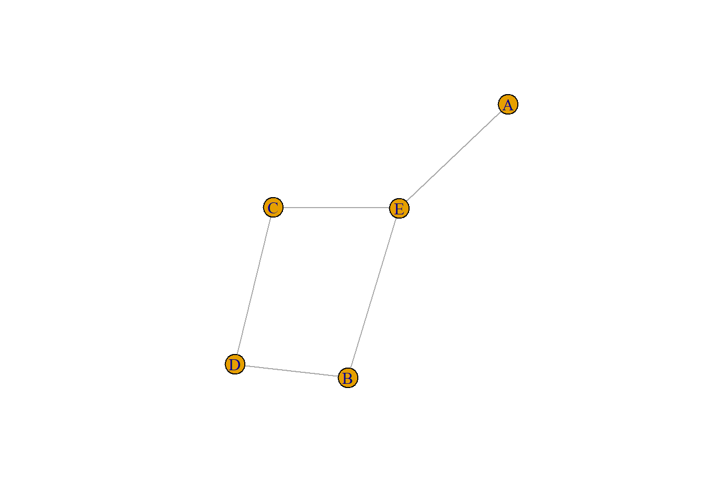
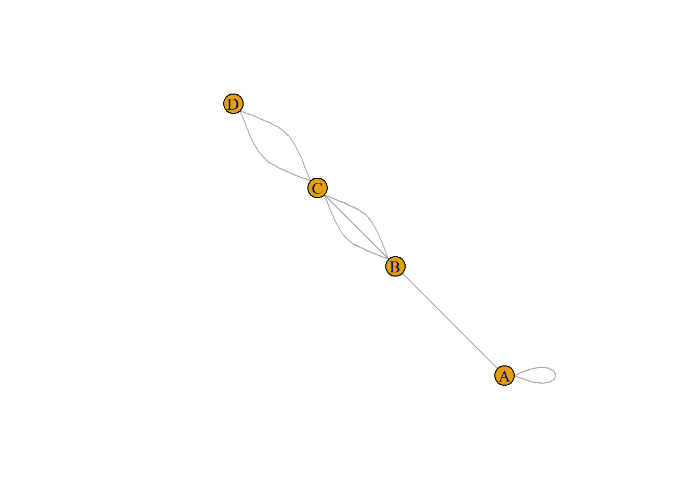
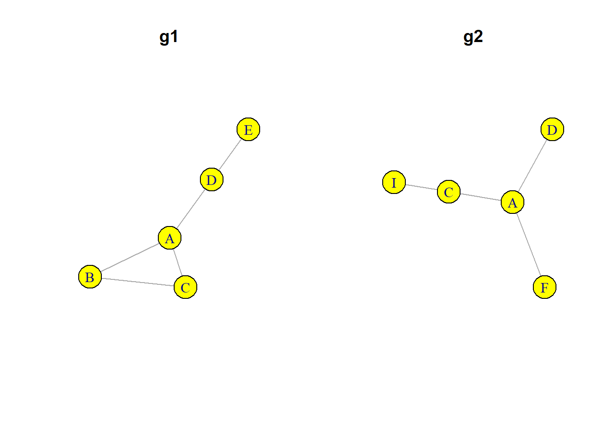

# Chargement du package
# install.packages("igraph")
library(igraph)
# Création des deux réseaux
d1 <- rbind(c("A","B"),c("A","C"), c("B","C"), c("A","D"), c("D","E"))
d2 <- rbind(c("A","F"), c("A","D"), c("A","C"), c("C","I"))
g1 <- graph.data.frame(d1, directed = FALSE)
g2 <- graph.data.frame(d2, directed = FALSE)
#visualisation
par(mfrow = c(1,2))
plot(g1, vertex.color = "yellow", vertex.size = 30, main = "g1")
plot(g2, vertex.color = "yellow", vertex.size = 30, main = "g2")Combiner des réseaux avec igraph
Actualisation d’un billet de juin 2015 posté sur (https://groupefmr.hypotheses.org)
Ce tutoriel décrit les fonctions d’igraph permet de combiner deux réseaux ayant a minima un sommet commun.
Soit deux petits réseaux non orientés ayant trois sommets (A, C, D) et deux liens (AC, AD) en commun.
J’ajoute des attributs à ces deux réseaux : le degré des sommets, l’intermédiarité des liens et la densité du réseau.
V(g1)$degree <- degree(g1)
V(g2)$degree <- degree(g2)
E(g1)$between <- edge.betweenness(g1)
E(g2)$between <- edge.betweenness(g2)
g1$densite <- graph.density(g1)
g2$densite <- graph.density(g2)La fonction complementer permet de créer le graphe complémentaire (ou inverse) d’un graphe. Le graphe complémentaire \(G'\) du graphe \(G\) a les mêmes sommets ; deux sommets de \(G'\) sont adjacents si et seulement si ils ne sont pas adjacents dans \(G\). Ceci peut être utile quand on étudie des réseaux denses pour mettre en évidence l’absence de relation.
Les attributs des sommets et du graphe sont conservés, même si certains sont désormais faux (degré des sommets par exemple) ; les attributs des liens sont bien entendu perdus.
compg1 <- graph.complementer(g1, loops = FALSE)
plot(compg1)
V(compg1)$degree[1] 3 2 2 2 1compg1IGRAPH 8514189 UN-- 5 5 --
+ attr: densite (g/n), name (v/c), degree (v/n)
+ edges from 8514189 (vertex names):
[1] A--E B--E B--D D--C C--ELa fonction ‘graph.difference’ prend comme arguments les deux réseaux à prendre en compte : seuls les liens présents uniquement dans le premier réseau sont conservés. Tous les attributs de ce premier réseau le sont également.
diffg1 <- graph.difference(g1, g2)
diffg1IGRAPH 852e125 UN-- 5 3 --
+ attr: densite (g/n), name (v/c), degree (v/n), between (e/n)
+ edges from 852e125 (vertex names):
[1] A--B B--C D--Ediffg2 <- graph.difference(g2, g1)
# coordonnées (quasi) identiques pour faciliter la comparaison
lay <- layout.fruchterman.reingold(g1)
# lien A-D présent dans g1 et g2 donc g1-g2 et g2-g1 entrainent sa disparition
par(mfrow = c(2,2))
plot(g1, main = "g1", layout = lay, vertex.color = "red", vertex.size = 20, vertex.label.dist =3)
plot(g2, main = "g2", layout = lay, vertex.color = "red", vertex.size = 20, vertex.label.dist =3)
plot(diffg1, main = "graph.difference(g1, g2)", layout = lay, vertex.color = "red", vertex.size = 20, vertex.label.dist =3)
plot(diffg2, main = "graph.difference(g2, g1)", layout = lay, vertex.color = "red", vertex.size = 20, vertex.label.dist =3)
Après transformation, certains des attributs conservés peuvent être devenus faux et il est donc nécessaire de les recalculer (densité, degré, intermédiarité des sommets et/ou des liens, etc.).
#calculer degré actualisé
V(diffg1)$degree2 <- degree(diffg1)
V(diffg1)$degree[1] 3 2 2 2 1V(diffg1)$degree2[1] 1 2 1 1 1La fonction graph.disjoint.union permet de joindre des graphes dont les sommets différents (opérateur %du%)
#liens communs à deux graphes : conserve les attributs
#tous les sommets sont conservés (opérateur %s%)
interg1 <- graph.intersection(g1,g2, keep.all.vertices = TRUE)
#seuls sommets adjacents aux liens communs sont gardés (ici ACD)
interg2 <- graph.intersection(g1,g2, keep.all.vertices = FALSE)
par(mfrow = c(1,2))
plot(interg1, sub = "graph.intersection(g1,g2,\nkeep.all.vertices = TRUE)")
plot(interg2, sub = "graph.intersection(g1,g2,\nkeep.all.vertices = FALSE)")
La fonction graph.union crée un réseau où tous les liens présents dans au moins un des réseaux de départ sont conservés. Tous les attributs sont conservés.
#union de graphes : tout lien présent dans un moins un graphe
#sera dans le graphe produit - tous les attributs sont conservés
#ne crée pas de liens multiples
uniong <- graph.union(g1,g2) #opérateur %u%